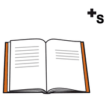

In classe, modulo 12
Fonti e letture
I riferimenti per approfondire l'approccio di Beppe Pea. Le pagine di questo percorso sono una mia sintesi: per i testi originali rimando alle fonti.
per
approfondire
Riferimenti

libri leggere
leggere- Pea G. (2015), La bussola della mente funzionale, LED Edizioni Universitarie, Milano.
- Pea G. (2012), contributo sulla didattica della matematica in Annali della Pubblica Istruzione, n. 3-4.
- Pea G., materiali dei corsi di formazione sulla sperimentazione didattica della matematica nella scuola dell'infanzia e primaria.
- Ministero dell'Istruzione, Indicazioni nazionali per il curricolo della scuola dell'infanzia e del primo ciclo (2012) e Nuovi scenari (2018).